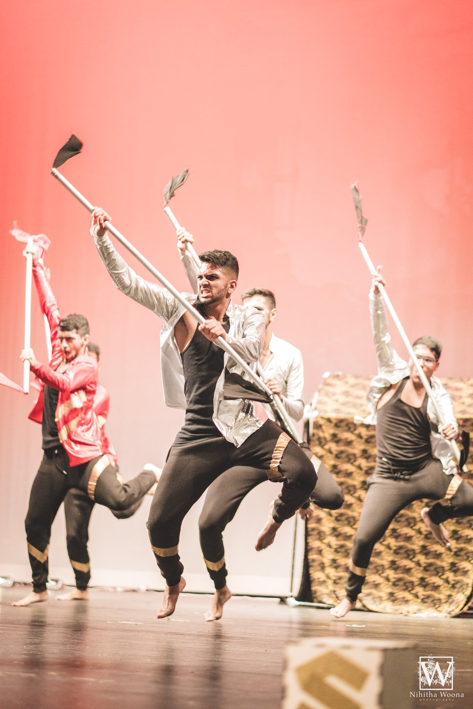
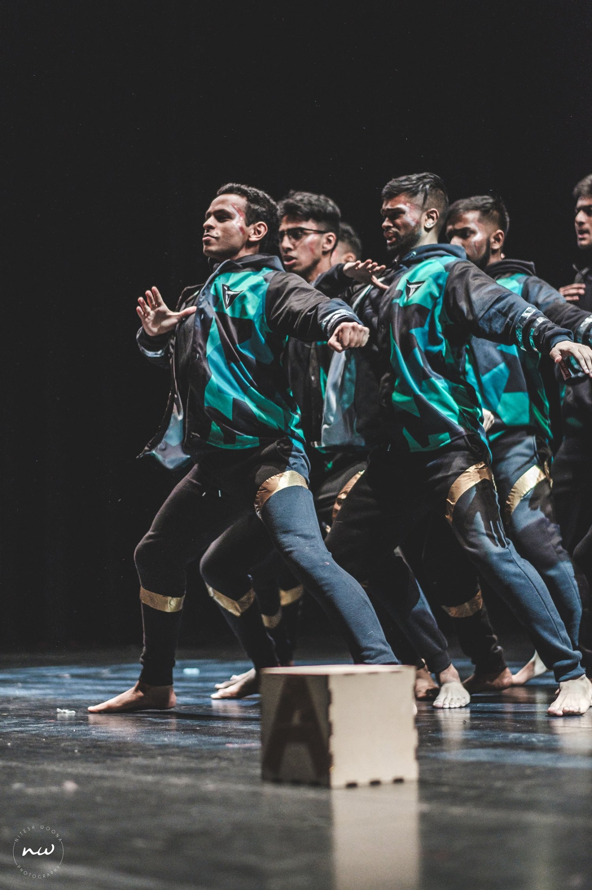
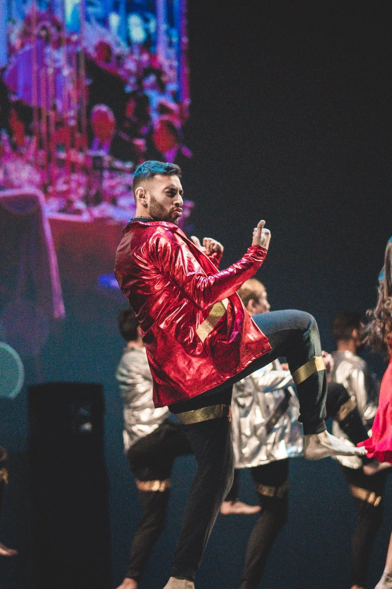
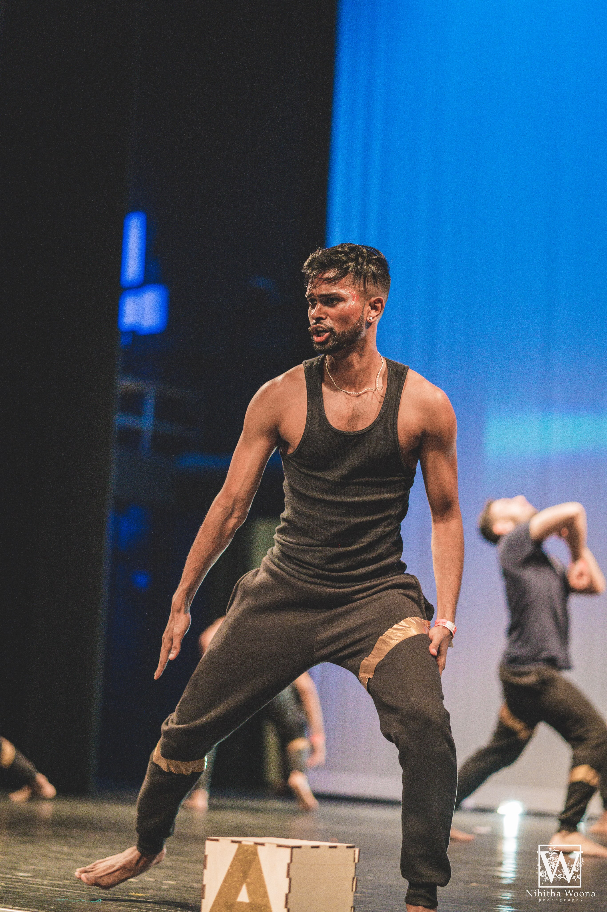
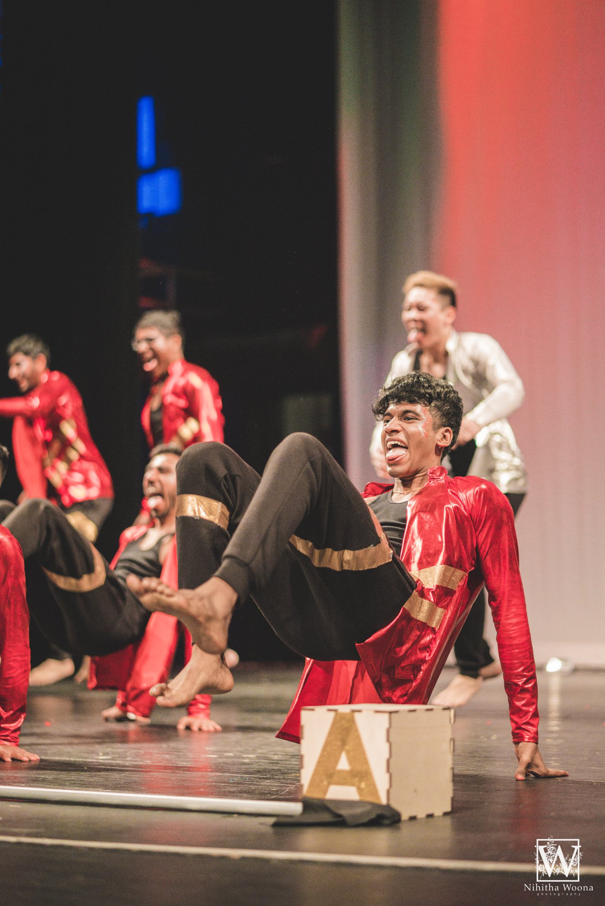

About Texas Talaash
We are an all male Bollywood Fusion Dance Team located in Austin, Texas that competes in the Desi Dance Network (DDN) national competition circuit.
DDN is a widespread group of 10,000 unique artists from across the country who are connected through social media and national dance competitions.
Dancers and dance teams from the DDN circuit have racked up millions of views on YouTube and continue to get more popular every year.
Each year, Bollywood Fusion collegiate dance teams from around the nation congregate in a multitude of competitions to earn placements/prizes
as well as the chance to receive a bid to the national championship competition in the South Asian Dance circuit.
Bollywood Fusion teams blend various aspects of Indian styles (Bollywood, Bhangra, Classical)
and Western influences (Hip Hop, Contemporary, Lyrical) to showcase a cohesive performance guided by a strong storyline.
The ultimate goal of Talaash is to do well throughout the season at competitions in order to compete and place at the national dance competitions,
Bollywood America (BA) and Legends. We also strive to inspire students to build self-esteem, discipline and self-confidence through dance arts education.
What is Bollywood Fusion?
-

Bhangra
Bhangra refers to several forms of folk dance and music that originate in the Punjab region of India. The dance is generally performed during the Vaisakhi festival that celebrates the harvest. Bhangra has a very energetic and lively tone and the dance is equally vivacious. The festival is celebrated with much pomp and fervor and the dresses worn by the male and female dancers are quite different from each other although both are a reflection of the joyous celebrations.
-

Hip-Hop
Hip-hop dance refers to street dance styles primarily performed to hip-hop music or that have evolved as part of hip-hop culture. It includes a wide range of styles primarily breaking, locking, and popping which were created in the 1970s and made popular by dance crews in the United States.
-

Bollywood
The Bollywood dance style is a beautiful blend of all Indian dance styles be it classical Indian dance, folk Indian dance or the more current R&B, hip hop music. Bollywood dance is the dance performed in Bollywood movies. Bollywood movies are mostly musicals and contain very catchy music in the form of song and dance numbers typically seen in Broadway musicals. "Songs and dances in Bollywood movies are a mode of indirect expression whereby characters can articulate thoughts and desires which may be inappropriate to state directly."
-

Contemporary
Contemporary dance is a style of expressive dance that combines elements of several dance genres including modern, jazz, lyrical and classical ballet. Contemporary dancers strive to connect the mind and the body through fluid dance movements. Contemporary dance stresses versatility and improvisation. Contemporary dancers focus on floorwork, using gravity to pull them down to the floor. This dance genre is often done in bare feet. Contemporary dance can be performed to many different styles of music.
-

South Indian/Koothu
Koothu is a folk dance and music genre with an emphasis on percussion performed in the South Indian state of Tamil Nadu. It is one of several popular genres employed in film music, mainly in Tamil cinema and other South films, filmed and produced by people of Tamil culture. Unlike classical Indian dances such as bharatanatyam or kathakali, koothu is relatively informal in that it has no structured, repeated steps.
Want to Sponsor Us?
We invite you to be a part of our exhilarating dance competition season as a sponsor of Talaash 2.0. This packet provides detailed information on the different levels of sponsorship and the benefits you will receive as an official Talaash sponsor. Being a part of the success of Talaash ensures a great amount of exposure for your organization/company and we encourage you to look over this packet highlighting the rewards. Check out our sponsorship package below!